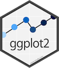

Data visualization with ggplot2
 is part of the
Data visualization is the creation and study of the visual representation of data. There are base graphing capabilities that come with R, but the ggplot2 package provides vizualizations that are particularly intuitive and customizable. The ‘gg’ in ggplot stands for Grammar of Graphics, the title of a data visualization book by Leland Wilkinson.
To create visualizations in ggplot2, you provide the ggplot function with a data frame, map variables from the data frame to aesthetic elements of the plot, and add on geometric objects to represent the data points.
The terminology might be difficult to follow at first, but let’s see if we can clarify things a bit with an example.
Here’s an example using the msleep dataset, which contains information on mammals’ sleep times and weights. Let’s take a look at the data frame:
msleepTo visualize the relationship between how daily sleep amount (in hours) and lentgh of sleep cycle (in hours) we map the sleep_total variable to x and the sleep_cycle variable to y. Then we specify that we want each data point to be represented by a point with geom_point.
Hit Run Code to view the plot.
ggplot(data = msleep, mapping = aes(x = sleep_total, y = sleep_cycle)) +
geom_point()Note the warning: Removed 51 rows containing missing values (geom_point).. This means that 51 observations had missing values for sleep_total or sleep_cycle (or both), and hence are not displayed on this plot.
The data: Star Wars
In this tutorial we will work with the starwars data frame. Each row in this data frame represents a character from the Star Wars franchise and the columns represent various attributes of these characters.
We can take a peek at the data with the glimpse function:
glimpse(starwars)The first observation in the dataset is Luke Skywalker. The image below shows how the variables apply to him:

Luke Skywalker
Scatterplots
How can we visualize the relationship between characters’ heights and masses? Following the structure of the ggplot function that we laid out earlier, we pass starwars to the data argument, and map height and mass to the x and y aesthetics, respectively. Then, we specify on the next layer that we would like the data points to be represented by points with geom_point.
Fill in the blanks below to create the scatterplot.
ggplot(data = ___, mapping = aes(x = ___, y = ___)) +
___ggplot(data = starwars, mapping = aes(x = height, y = mass)) +
geom_point()"Congrats on completing the exercise. Before you proceed, make sure your answer matches the solution."Notice the warning that tells us that 28 of the observations have not been graphed, which means that some of the necessary information (height and mass) was missing for those rows.
Setting aesthetic features
So far we’ve only utilized the x and y arguments, but we can also set the color, size, shape, and alpha (transparency) of our data within the aes argument.
For example, here is the same scatterplot from before but with another added aesthetic: we map the color of each point to the observation’s gender. Try changing the color parameter to another variable, such as eye_color.
ggplot(data = starwars, aes(x = height, y = mass, color = gender)) +
geom_point()Warning: Removed 28 rows containing missing values (geom_point).
Not every type of variable is suited to certain aesthetics. More specifically, continuous and discrete variables will be interpreted in different ways. Consult this table for guidance:
Faceting your visualizations
Sometimes it’s more appropriate to create multiple plots than to continue piling on different aesthetics to a single graph. Faceting is the use of smaller plots that display subsets of the data, which is particularly helpful when exploring conditional relationships.
If we decided that instead of employing the color aesthetic, we wanted to create separate scatterplots for each gender, we could add a facet_grid to the plot. Within the the facet_grid command, you must provide a “formula,” which divides the graph vertically by what’s to the left of the ~ and horizontally by whatever’s to the right.
. to indiciate that we aren’t utilitizing the left-hand side. Try flipping the formula around to have gender on the left—what happens to the visualization?
ggplot(data = starwars, aes(x = height, y = mass)) +
facet_grid(. ~ gender) +
geom_point()Warning: Removed 28 rows containing missing values (geom_point).
What if we wanted to use both sides of the equation? See below where we create graphs for each combination of gender and hair_color. You’ll notice that this isn’t a very useful visualization, since there are enough hair colors to make our height axis too compressed to read, and many of the plots have no data. A key to visualization worth remembering is not to sacrifice the interpretability of a graph in order to squeeze in more information.
ggplot(data = starwars, aes(x = height, y = mass)) +
facet_grid(gender ~ hair_color) +
geom_point()## Warning: Removed 28 rows containing missing values (geom_point).
You can also take advantage of both dimensions of a plot while still limiting yourself to one variable. Instead of taking two variables and splitting them along axes like facet_grid, the facet_wrap command only takes one but wraps it in order to fit more plots without making them too thin:
ggplot(data = starwars, aes(x = height, y = mass)) +
facet_wrap(~ eye_color) +
geom_point() ## Warning: Removed 28 rows containing missing values (geom_point).
Data types
In the previous sections we were focused on graphing height versus mass in order to understand the relationship between them. However, it’s often the case that we’d only like to focus on one variable (univariate) at a time so that we can understand how it’s distributed.
Before picking visualization tools for our single variable, we need to understand what kind of data it is. If data is numerical, we can quantify it with a number. Within this class, data can be discrete or continuous. Discrete data usually describes something that’s been counted and can’t be made more precise, usually a non-negative integer. The number of children in a family is discrete because you can have 0, or 1, or 2 (and so on…) kids but not 0.5 or 1.1.
Continuous data on the other hand can take on an inifinite number of values within a stated range. Take height for example: while we usually round to the nearest inch, technically a person’s height can take on an infinite number of positive values if you continue to be precise to more and more decimal places.
Pick which variables are continuous:
If data isn’t numerical then it is categorical (or qualitative), which means the data cannot necessarily be measured or quantified but still takes on distinct values. Categorical variables can be things you might observe with your senses, like colors or tastes, or labels like names of cities or people, or something more abstract like written text. Just because something is categorical doesn’t mean it can’t be sorted though: categorical data that is ordinal if it can be put in some sort of natural ordering, such as education levels (high school, college, grad school, etc.).
Pick which variables are ordinal:
Univariate analysis
When examining a numerical variable, we are often interested in its distribution, which describes the frequency with which the values in the variable’s range are observed. A familiar distribution is the standard normal distribution:

We can describe the shape of a distribution as symmetric if the shape is approximately mirrored around the middle, right-skewed if it has a long tail to the right, or left-skewed if it has a long tail to the left. We say a distribution is unimodal if it has one peak, bimodal if it has two peaks, multimodal if it has many peaks, or uniform if it has no peaks (a flat line). What are the skewness and modality of the normal distribution?
We can also measure the center of a distribution using the mean (the numerical average of the observations), the median (the observation with equal number of observations that are greater and less than it), and the mode (the most frequent observation). The mean, median, and mode for a normal distribution are all the same (0 in the standard case above).
We can measure the spread of distribution with the range (the most extremely high and low values), the standard deviation (how far the typical value is from the mean), and the inter-quartile range (the range of the middle half of the data).
Let’s get back to visualization with ggplot2! To create a distribution for a variable, you only need to provide an x value to the aes argument (since the vertical axis is determined by the frequency of the x variable). From there you can visualize its distribution with geom_histogram. By definition, histograms create discrete buckets to categorize observations, the size of which are determined by the binwidth argument.
height variable in the starwars dataset. Try changing the size of the binwidth. Are there values that make it hard to understand that data?
ggplot(starwars, aes(x = height)) +
geom_histogram(binwidth = 10)Warning: Removed 6 rows containing non-finite values (stat_bin).
If we know or suspect that a variable is continuous, we can use the geom_density geom to tell ggplot to estimate what a continuous curve for this variable would look like. These curves are usually “bumpier” than the theoretical distributions you might be used to because they are based on the actual data and must account for its particularities.
ggplot(starwars, aes(x = height)) +
geom_density()## Warning: Removed 6 rows containing non-finite values (stat_density).
Of course, we know that data isn’t always numerical, so geom_histogram won’t be appropriate in some cases. For categorical variables, you can use geom_bar, which will create a bar chart with enough named categories to describe all the observations:
ggplot(starwars, aes(x = gender)) +
geom_bar()
Pick another categorical variable from the starwars dataset and create a bar graph for it. This time include + coord_flip() at the end of the ggplot command. What happens?